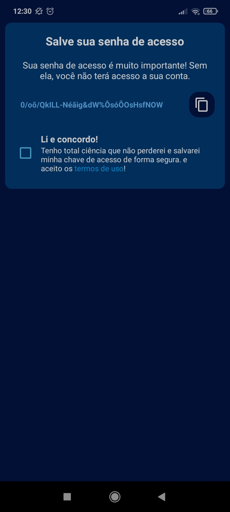
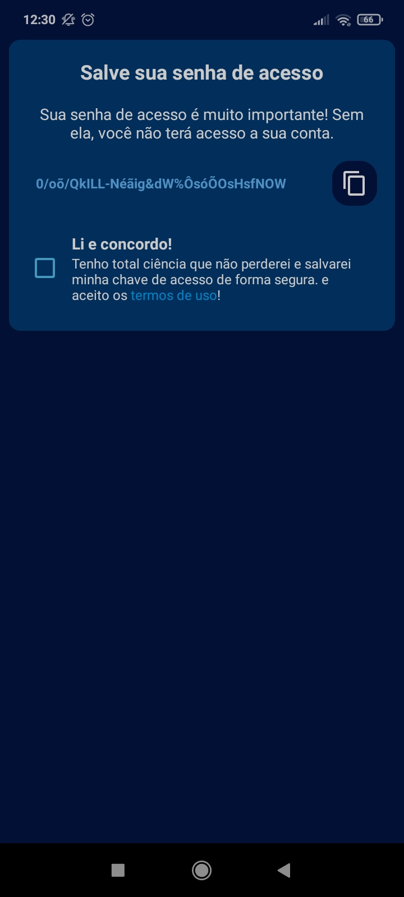

HuHu-Secure
HuHu-Secure é um app de gerenciamento de senhas baseado nas wallest de criptomoedas, com alta segurança e criptografia ...
HuHu Secure é um aplicativo de gerenciamento de senhas altamente seguro, que utiliza a mais recente tecnologia de criptografia para proteger os dados sensíveis dos usuários. Com um enfoque em garantir a segurança e privacidade, o sistema foi desenvolvido com base em técnicas de criptografia avançadas, como AES-GCM, e práticas seguras de armazenamento, inspiradas nas melhores soluções de segurança digital, como aquelas aplicadas em wallets de criptomoedas.
Criptografia e Armazenamento Seguro
O HuHu Secure utiliza o Android Keystore para proteger as chaves de criptografia de maneira que nunca deixam o dispositivo, garantindo que essas chaves nunca sejam acessadas ou exportadas por ninguém, nem mesmo pelo próprio aplicativo. A chave de criptografia utilizada no processo é gerada de forma única e protegida dentro do hardware do dispositivo, e a criptografia emprega o algoritmo AES-GCM com chaves de 256 bits, que fornece não apenas sigilo, mas também a integridade dos dados.
Criptografia de Dados com AES-GCM
Ao criptografar os dados, como senhas e informações sensíveis do usuário, o sistema utiliza um vetor de inicialização (IV) único para cada operação de criptografia. Esse vetor, juntamente com os dados criptografados, é armazenado em formato Base64, garantindo que apenas o usuário com a chave correta possa descriptografar os dados. Além disso, ao utilizar o AES-GCM, o aplicativo assegura a integridade dos dados e protege contra ataques de modificação de dados.
Proteção de Senhas com Derivação de Chave
HuHu Secure também oferece um método alternativo de criptografia usando uma senha fornecida pelo próprio usuário. Ao invés de depender de uma chave estática, a senha do usuário é convertida em uma chave de 256 bits através do algoritmo PBKDF2-HMAC-SHA256, com um salt aleatório gerado para dificultar ataques de dicionário e força bruta. Este processo é realizado por 100.000 iterações, o que torna extremamente difícil a extração da chave, mesmo que um atacante tenha acesso aos dados criptografados.
Geração de Chave Única e Dinâmica
Uma das principais características de segurança do HuHu Secure é a geração dinâmica de uma chave única de acesso. Essa chave é criada a partir de informações exclusivas do dispositivo, como seu ID único, combinado com um salt complexo gerado aleatoriamente. Isso elimina a necessidade de armazenamento de chaves em qualquer banco de dados ou servidor, o que torna a solução muito mais segura contra vazamentos de dados. O uso de SHA-512 para gerar um hash seguro do identificador e salt, juntamente com o uso de SecureRandom para aumentar a aleatoriedade, assegura que a chave seja exclusiva e difícil de prever.
Armazenamento Seguro no SharedPreferences
Os dados sensíveis do usuário são armazenados no SharedPreferences, mas antes de serem salvos, são criptografados com o uso das técnicas de segurança descritas. Isso significa que, mesmo que alguém consiga acessar os arquivos de SharedPreferences, os dados estarão protegidos por criptografia forte. Não há armazenamento de informações sensíveis em texto puro, como senhas ou a chave única de acesso do usuário, garantindo que os dados estejam sempre seguros.
Principais Benefícios de Segurança:
- Chaves de Criptografia Armazenadas de Forma Segura: Utiliza o Android Keystore, garantindo que as chaves de criptografia não sejam acessíveis ou exportáveis.
- Criptografia de Ponta com AES-GCM: Garante sigilo e integridade dos dados, com autenticação e proteção contra modificações.
- Proteção contra Força Bruta e Ataques de Dicionário: Usa o PBKDF2-HMAC-SHA256 com salt aleatório e múltiplas iterações para proteger as senhas.
- Geração de Chave Única e Dinâmica: Não armazena chaves de acesso, usando um processo seguro e único para cada usuário.
- Armazenamento Criptografado no SharedPreferences: Todos os dados sensíveis são criptografados antes de serem armazenados, garantindo que nada seja salvo em texto simples.
Ler mais

 
